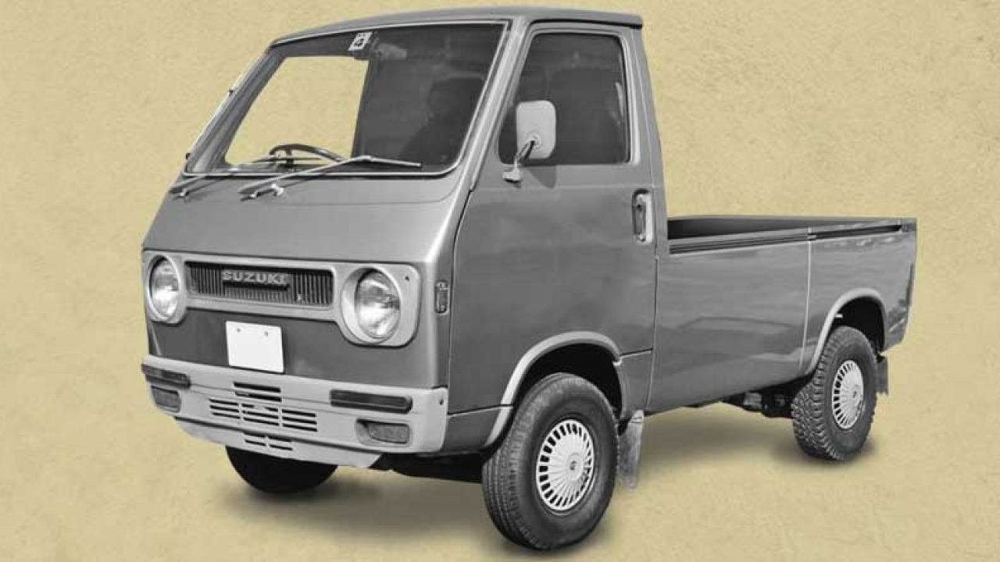
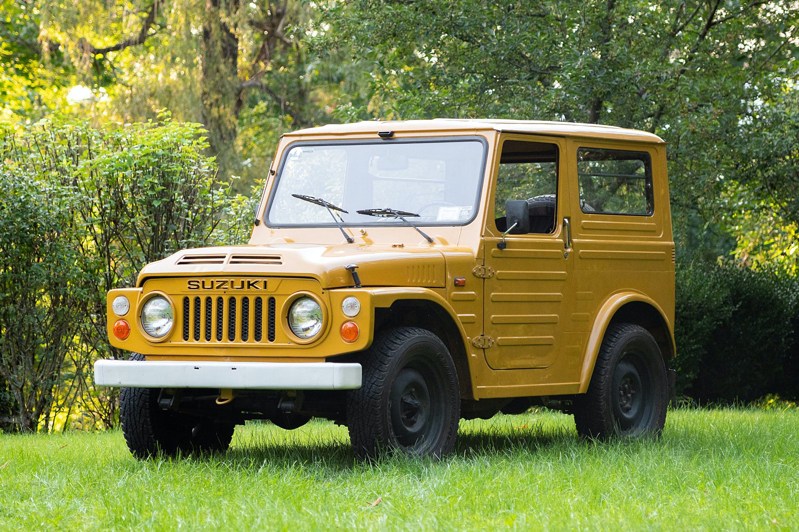
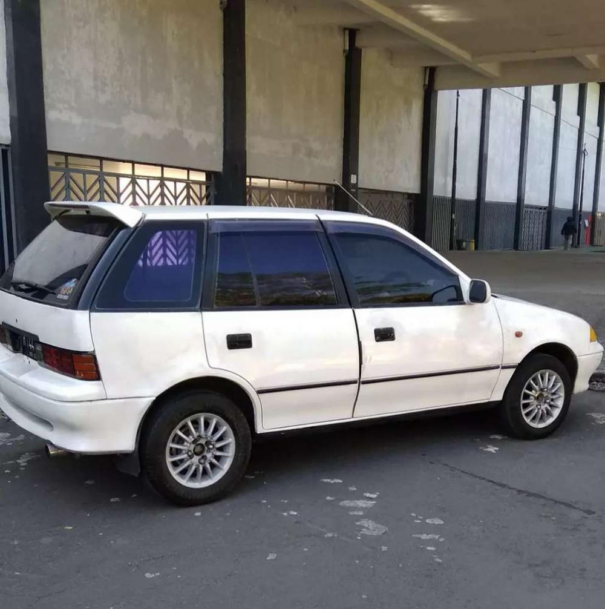

Suzuki
Suzuki adalah salah satu produsen sepeda motor dan mobil paling terkenal di Indonesia. Merek ini sendiri sudah sejajar dengan merek lain seperti Yamaha, Kawasaki, Honda untuk kendaraan roda dua dan Toyota, Daihatsu, Mitsubishi untuk kendaraan roda empat. Suzuki memiliki sejarah panjang di Indonesia. Seperti apa? Berikut ulasan lengkapnya, dikutip dari situs Federal Oil.
Era 70-an
Suzuki pertama kali meluncurkan produknya di pasaran pada tahun 1970 di bawah bendera PT. Indohero Steel & Perusahaan Konstruksi. Dua sepeda motor tipe A100 dan FR70 dihadirkan. Enam tahun kemudian, Suzuki mulai memproduksi kendaraan roda empat di tanah air. Di bawah kepemimpinan Subronto Laras yang dikenal sebagai bapak Suzuki Indonesia, Suzuki memproduksi pikap Carry ST10 dan mobil penumpang Fronte. Dengan program lokalisasi pemerintah, Suzuki mengembangkan convertible generasi kedua yang disebut Super Carry ST20 setahun kemudian. Suzuki kemudian mengembangkan Jimny Lj80 pada tahun 1979 dan beberapa kendaraan roda empat lainnya seperti GP100, GP125 dan TS100.
Era 80-an
Dua tahun kemudian, pada tahun 1981, Jimny Lj80 dikembangkan menjadi SJ10, yang menggunakan mesin 1000cc silinder. Mesin ini kemudian digunakan sebagai perlengkapan standar pada mobil Suzuki. Dua tahun kemudian, yaitu Pada 1983, Suzuki meluncurkan model baru, ST20, yang dikembangkan sejak 1977. Tahun ini, penggerak empat roda Suzuki juga melalui proses standarisasi. Beroperasi di Indonesia sejak tahun 1970-an, Suzuki mampu meraih prestasi terbaik dengan menerima penghargaan pemimpin pasar kendaraan roda empat pada tahun 198
Era 90-an
Pada tahun 1990, Suzuki meluncurkan Forsa Amenity. Ini adalah sedan yang ditenagai oleh mesin 1300cc. Pada tahun yang sama PT. Indomobil Suzuki Internasional didirikan. Ternyata ISI ini merupakan penggabungan dari lima perusahaan lain yakni PT. Indohero Steel and Engineering Co., PT. Indomobil Utama, PT. Suzuki Indonesia Manufacturing, PT. Suzuki Motor Industry dan PT. Industri kimia pertama.
| Kelebihan | Kekurangan |
|---|---|
| Irit BBM | Mesin minim teknologi |
| Awet | Desain kurang bagus |
| Murah | Peforma biasa |
| Mudah dirawat | Tidak banyak pilihan produk |
| Harga jual kembali tidak sebaik Toyota dan Daihatsu |